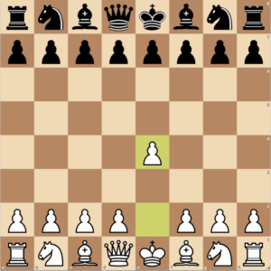

Strategy
Early game
Every chess piece, exepct for the king, gets more valuable as it gets closer to the center of the board. This is because it increases the amount of squares that the piece effects. A knight at the start of the game only affects two squares. But if the knight is near the center of the board it can affect 8 squares. The bishop queen, and rook all work similarly. That is why, espeically in the beggining of the game both teams typically attack the center of the board and develop their peices where they can defend their friendly pieces or attack enemy pieces near the center. The most common opening move in chess is when whites pawn on the e file moves up two squares to e4. There it holds the most of the center as possible, also allowing for the development of whites light square bishop and queen. After this depending on what black plays white has many number of moves it can make, including knightb3, knightf3, pawnd4. A good rule of thumb is to get pawns in thecenter, develop knights, develop bishops, then castle.
Middle Game
Middle game is typically agreed on being the hardest part of the game to stratogize. There are millions of different situations that can arise from the openings, theres times when both sides have all their pieces, times when knights were traded, or bishops, or queens. Times when one side lost pawns and one side lost position. A good way to determine good of a position you're in is to measure king saftey, material, structure/positioning, and possible attacks. If your king is safe, and you have peices that are active and pressuring the other team you are in a good spot. If not, you could be in for a long ride. Trading peices is common in the opening and middle games. To know if a trade is good you should know a few things. What peices are being traded and how many peices do you have. This is where the point system comes into effect. If you can trade your knight or bishop for a rook, it's typically a good idea. But what if both peices are the same? If you are up material it is typically a good idea to trade peices, because it simplifies the position.
We're in the endgame now
The endgame of chess is all about three things. King saftey, material, and position. Up till know you have been focused on keeping material but if there is a time and place where sacrificing pieces can improve your position by forcing the opponets peices out of a defensive position around their king. Games can be won or loss based entirely from the endgame. Pieces values also transition later into the game. Knights become less valuble while bishops and rooks become more valuble. This is because there are less pawns on the board blocking their lanes, which also nulifies the knights advantage of jumping over peices. Pawns also increase in value as they now have a greater chance of making it across the board to be promoted into a queen.